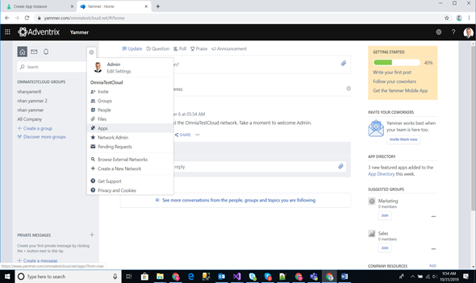
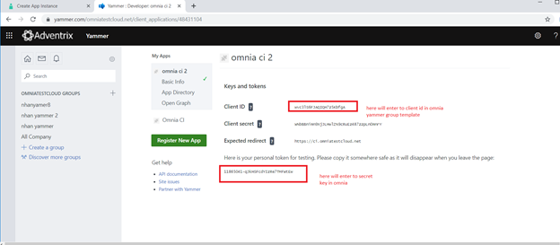
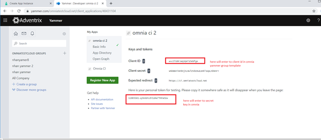
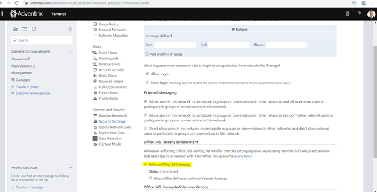
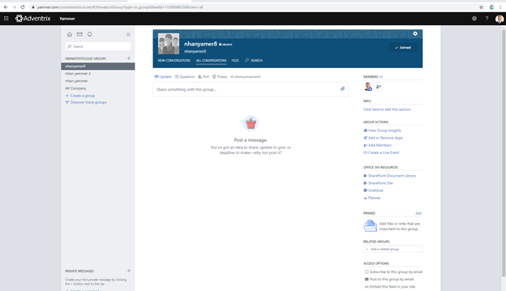

Setup Yammer in Omnia¶
Follow these steps to setup Yammer in Omnia Online.
1. The account used to create the Yammer App needs to be at least Verified Admin in Yammer (Network Admin level is not enough), or alternatively Global Administrator in Microsoft 365. We recommend using a non-personal service account for creating the Yammer App, as the app stops working if the account used to create the app is deleted.
2. Navigate to the following URL (replace m365x249588 with your tenant), as the new Yammer does not have a direct link to client applications.
https://www.yammer.com/m365x249588.onmicrosoft.com/client_applications
3. Create the Yammer App.
4. After creating the new app, click the link to generate the app token.
 

5. Go to Network admin -> Security settings to enable Office 365 Identity Enforcement. You need it for the Yammer group auto to create a Sharepoint site when the Yammer group is created.
6. Setup a Yammer group template in omnia. Add above yammer app -> client id to the Yammer group template as below:

7. Setup omnia Secret key for the Business Profile scope and the same with that provisioning template. Add above Yammer app token to Secret key as below.

8. Finally create app provisioning from yammer group template.
Example: Result when done creating Yammer group name like nhanyamer8:
And Sharepoint site:

Note! If you want to use the new, improved Yammer integration, the Yammer integration Tenant Feature must also be activated, see: Features - Tenant